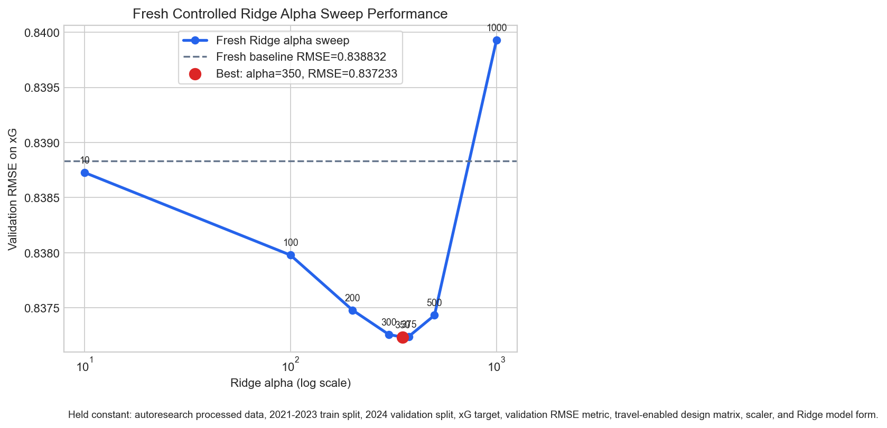
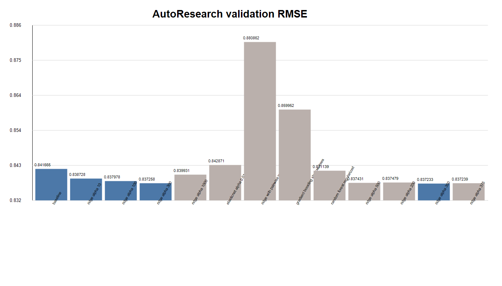

EDA and AutoResearch results for capstone_390
2026-05-21
How does travel distance affect a Premier League team’s attacking and defensive performance, measured with expected goals?
autoresearch/data/processed.csv
| Split | Seasons | Rows | Role |
|---|---|---|---|
| Train | 2021-2023 | 2,280 | Fit candidate models |
| Validation | 2024 | 760 | Select model and hyperparameters |
| Locked test | 2025 | 760 | Final evaluation only |
The design matrix is intentionally interpretable:
is_hometravel_100_milesThe baseline question is whether travel distance improves predictive accuracy after accounting for home/away status and team/opponent identity.
Root README baseline:
| Target | Baseline RMSE | Travel RMSE | Direction |
|---|---|---|---|
xg |
0.9645 | 0.9696 | worsened |
xga |
0.9958 | 0.9880 | improved |
The AutoResearch agent was constrained to modify only autoresearch/model.py, return an sklearn-compatible estimator, run under 60 seconds on CPU, and optimize validation RMSE for xg.
prepare.pyrun.pyresults.tsv at repository root
| Run group | Best row in group | RMSE | R2 | Interpretation |
|---|---|---|---|---|
| Baseline | baseline | 0.841665 | 0.107158 | reference for root result log |
| Ridge sweep | ridge alpha 350 | 0.837233 | 0.116537 | best root-level run |
| ElasticNet | alpha 0.01, l1 0.2 | 0.842871 | 0.104596 | worse than baseline |
| Interactions | ridge with pairwise interactions | 0.880862 | 0.022060 | large degradation |
| Tree models | random forest regularized | 0.841139 | 0.108273 | near baseline |
| Boosting | gradient boosting shallow trees | 0.859952 | 0.067938 | worse than baseline |
Within the root-level result table, ridge alpha 350 reduces validation RMSE by 0.004432, a 0.53% improvement over the logged baseline.
cleaned_results.tsv and alpha_performance.png

| Experiment | Alpha | RMSE | R2 | Outcome |
|---|---|---|---|---|
| Baseline linear regression | N/A | 0.838832 | 0.113158 | reference |
| Ridge alpha 10 | 10 | 0.838728 | 0.113378 | improved |
| Ridge alpha 100 | 100 | 0.837978 | 0.114963 | improved |
| Ridge alpha 200 | 200 | 0.837479 | 0.116017 | improved |
| Ridge alpha 300 | 300 | 0.837258 | 0.116484 | improved |
| Ridge alpha 350 | 350 | 0.837233 | 0.116537 | best controlled ridge result |
| Ridge alpha 375 | 375 | 0.837239 | 0.116524 | slight regression |
| Ridge alpha 500 | 500 | 0.837431 | 0.116117 | regression |
| Ridge alpha 1000 | 1000 | 0.839931 | 0.110833 | worse than baseline |
autoresearch/results.tsv
| Best full-history run | Commit | RMSE | R2 | Status |
|---|---|---|---|---|
| ridge alpha 0.1 | a459bea |
0.830059 | 0.131610 | keep |
| ridge alpha 0.01 | a459bea |
0.830059 | 0.131610 | discard |
| dry voting ridge extra trees even weights | 4307930 |
0.830723 | 0.130221 | keep |
| nonridge voting trees hist gradient blend | 9abdfad |
0.834509 | 0.122276 | discard |
performance.png

The safest model-selection statement is: Ridge-style regularization is the most reliable direction found; alpha choice depends on whether the controlled root sweep or the full AutoResearch log is treated as authoritative.
| Source | Scope | Best row | RMSE | Use it for |
|---|---|---|---|---|
cleaned_results.tsv |
controlled Ridge alpha sweep | ridge alpha 350 | 0.837233 | clean experimental explanation |
root results.tsv |
compact mixed log | ridge alpha 350 | 0.837233 | root-level result summary |
autoresearch/results.tsv |
full iterative AutoResearch log | ridge alpha 0.1 | 0.830059 | best observed validation score |
Before touching the locked 2025 test set, choose one selection policy and align model.py to that selected row.
autoresearch/model.py
The current editable model file contains a VotingRegressor with:
ExtraTreesRegressorHistGradientBoostingRegressorRandomForestRegressorThis current code does not match the best full-history logged row, ridge alpha 0.1. Treat this as a reproducibility checkpoint before final evaluation.
autoresearch/run.py.Main takeaway: regularized linear structure was more trustworthy than added complexity for validation xG, and the locked test set should be used only after resolving the selected-model mismatch.
| File | Used for |
|---|---|
README.md |
research question, baseline travel framing, initial xG/xGA results |
LOCKED_TEST_PLAN.md |
train/validation/test policy |
autoresearch/program.md |
AutoResearch objective and constraints |
autoresearch/prepare.py |
feature engineering and split logic |
autoresearch/run.py |
validation metric and logging workflow |
autoresearch/model.py |
current estimator checkpoint |
results.tsv |
root-level compact result log |
cleaned_results.tsv |
controlled Ridge alpha sweep |
autoresearch/results.tsv |
full iterative experiment history |
alpha_performance.png |
controlled alpha sweep visual |
performance.png |
performance comparison visual |